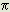

THE SIXTH QUESTION
The Physics of Space-Time?
Copyright © 1969 Harold Aspden
This 'question' has a copyright notice dated some thirty years prior to the time when it is being entered into these Web pages. The question in simple terms concerns the real nature of whatever it is that occupies the vacuum. Physicists refer to this as 'space-time' but all that implies is that they have some notion of a theory developed by Einstein. No physicist believing in Einstein's theory can give you a coherent account of what it is that occupies space devoid of matter.
However, in 1969, as a way of drawing attention to a book I had written entitled: 'Physics without Einstein' and by reference to a paper I had had published in the Journal of the Franklin Institute, I wrote a two-page printed introduction to the reprints of that paper that I was distributing and I have decided to put the text of that introduction on the Web here as Energy Science Question No. 6.
Einstein's Theory of Relativity is founded upon the assumption that the laws of physics can be applied without change in any non-rotating inertial frame of reference. This principle is valid as applied to Newton's laws of motion which, of course, relate to properties measured relative to the inertial frame. But is it valid for physical behaviour measured in the electromagnetic reference frame? Einstein assumes identity of the inertial frame and the electromagnetic frame. He assumes that a property of laws of mechanics shown in the inertial frame is shared by all physical laws.
Now, look at what he missed by this assumption. Firstly, he failed to relate his theory with quantum mechanics. According to Heisenberg's Principle of Uncertainty, the position and momentum of an electron are never certain but the product of the uncertainties in these quantities is certain. It is h/2
, where h is Planck's constant. May not this mean simply that since momentum is a mass property measured in the inertial frame and since position of charge is detected in the electromagnetic frame, there is a clear
indication from quantum mechanics that the inertial frame and the electromagnetic frame, though definitely related, are nevertheless not identical?
May it not be that the two frames are separated by a small but certain distance and that the electromagnetic frame moves cyclically and harmoniously about the inertial frame? Then an electron at rest in the electromagnetic frame has a variable momentum and position in the inertial frame but the
product of the uncertainties in these quantities is the same wherever the electron is in the universe. Also, matter at rest in the electromagnetic frame will be centrifugally out of balance and will disturb space-time (whatever that is) in proportion to its mass, so giving rise to mass related effects (gravitation) in exact accord with the Principle of Equivalence. Gravitational mass and inertial mass are identical because gravitation, as a magnetic property developed by disturbing space-time, arises from an inertial disturbance. Then, if the Earth's electromagnetic frame moves at uniform velocity with the Earth's matter, we will, of course, be unable to detect changes in the speed of light measured in different directions in the Earth laboratory. The Michelson-Morley experiment confirms this. It does not prove anything about the applicability of the Principle of Relativity because it is concerned with electromagnetic properties and these are not measured in the inertial frame as Einstein's principle requires.
If we accept that space-time can contain separated inertial and electromagnetic frames in a relative cyclic harmonious and universal state of motion, we have immediate insight into the nature of time. Time is incorporated into the properties of space itself without recourse to the assumption that the propagation velocity of light c is a universal constant. Einstein somehow assumes c to be constant and then finds it can vary to allow the gravitational deflection of light. He has somehow confused us about time because we have inherited from him an unresolved problem known as the clock paradox. Why not accept that time is the universal constant and admit, as we have to anyway, that it is c which can vary? Why not forget the fourth space dimension, found by multiplying time and the velocity c, when it only leads to confusion and cannot, in any case, be portrayed in a physical form?
Why be blinded by the limited success of Einstein's theory when it purports to define the fabric of space-time and yet cannot unify physics? What is gravitation? Mere geometry? Is it not better to say that it is an electrodynamic force of attraction between mass disturbances in the space-time system? We can forge the link with electrodynamics so easily because, in the space-time system described, all matter is always moving mutually parallel due to its harmonious cyclic motion with the electromagnetic reference frame. This means that the related electrodynamic disturbances are mutually parallel current elements. Such elements attract in strict accordance with the inverse square law. Hence the force of gravitation. Then the propagation velocity of gravitation is the same as that of light, as is found. The cyclic motion does not interfere with this because the energy distribution of the field interaction is independent of such motion.
A key factor is, of course, to know the true law.of electrodynamic attraction between isolated current elements. Many laws have been proposed. The problem is classical, has not been resolved, and tends to be thrown aside as 'merely academic'. Yet, it is of fundamental importance. This introduces the writer's law of electrodynamics presented in the appended paper. Equation (10) shows that for mutually parallel current elements there is a simple inverse-square attraction as required to explain gravitation.
The foregoing account also introduces a new physics of space-time, the subject of a book by the writer entitled 'Physics Without Einstein', Sabberton Publications, P.O. Box 35, Southampton, England. In extending the above analysis in this work, the Schrodinger equation emerges immediately. The properties of space-time itself unfold to permit evaluation of the basic constants of physics, including Planck's constant and the constant of gravitation. They are reducible to functions of three basic parameters, c, and the charge e and the mass m of the electron. In one sweeping account, the masses and spin magnetic moments of elementary particles are explained alongside the magnetic moments of astronomical bodies. All the tested results of Einstein's Special and General Theories have simple and alternative explanation in this new unified form of physics.
The above introduction was not published in the Journal of the Franklin Institute but the appended paper is reprinted from the February 1969 issue of this Journal and appears in Vol. 287 at pp. 179-183.
Press the following link button to read the Abstract of that paper: [1969a]
Press the following link button to proceed to the next Essay in this 'Question' series:
'Question No. 7'
Harold Aspden
February 11, 1999
h.aspden@physics.org